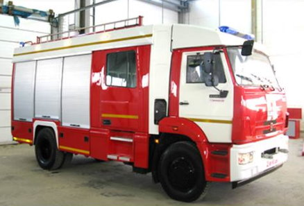

<section class="product page__global">
  <div class="product__inner">

    <h1 class="product__title page__title">Автомобилестроение

    </h1>
    <ul class="breadcrumb">
      <li class="breadcrumb__item">
        <a class="breadcrumb__link" href="index.html">Главная</a>
      </li>
      <li class="breadcrumb__item">
        <a class="breadcrumb__link" href="product.html">Продукция</a>
      </li>
      <li class="breadcrumb__item">
        <a class="breadcrumb__link" href="product-machine.html">Машиностроение</a>
      </li>
      <li class="breadcrumb__item">
        Автомобилестроение
      </li>
    </ul>

    <div class="wrapper">

      <p class="page__text">
        Композиты широко используются при производстве автокомпонентов в автомобилестроении и сельскохозяйственном машиностроении. В стратегии развития автомобильной промышленности Российской Федерации на период до 2020 года большое значение отводится проектам по производству элементов интерьера/экстерьера, заднего моста, бамперов, приборных панелей, фар, сидений, элементов систем активной безопасности и др.
      </p>
          
        <p class="caption">Пожарный автомобиль с применением композиционных материалов</p>
        <p class="page__text">
          Основные достоинства композиционных материалов для данных отраслей промышленности состоят в повышенной стойкости к повреждениям, коррозийной стойкости, малом весе, экономичности и звукопоглощении. Использование легких композитов позволяет снизить общий вес автомобильной и сельскохозяйственной техники, а значит, сэкономить топливо при ее эксплуатации. Оснащение современной техники электроникой приводит к увеличению числа корпусных элементов, изготавливаемых из широкого ассортимента прочных и теплостойких композитов.
        </p>
        <p class="page__text">
          Автомобильная индустрия, являющаяся одной из важнейших отраслей промышленного производства, стоит на пороге коренных изменений. В наибольшей степени эти изменения будут связаны с формированием инновационной составляющей, которая тесно связана с использованием новых инновационных материалов, таких как композиты. Возможности их безграничны и еще далеко не осознаны и не освоены. Изделия из композитов впечатляют своим совершенством, точностью, дизайном. Перечислить номенклатуру изделий из композиционных материалов просто невозможно: кабины, маски, бамперы, капоты, крылья, панели облицовки приборов, фар, рулевой колонки и т.д.
        </p>

    </div>


  </div>
</section>